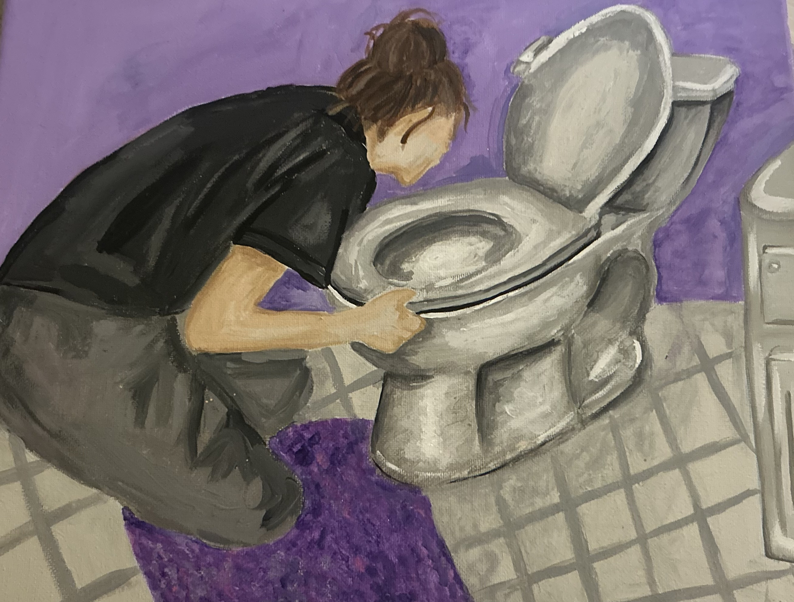

Project Name: Beyond the Mirror
I am currently doing a painting that shows a girl
throwing up after binge eating. I am trying to spread
awareness about the impact of social media on the mental
health of young girls. I have personally experienced
this secondhand which is why I am so passionate about
this project.
